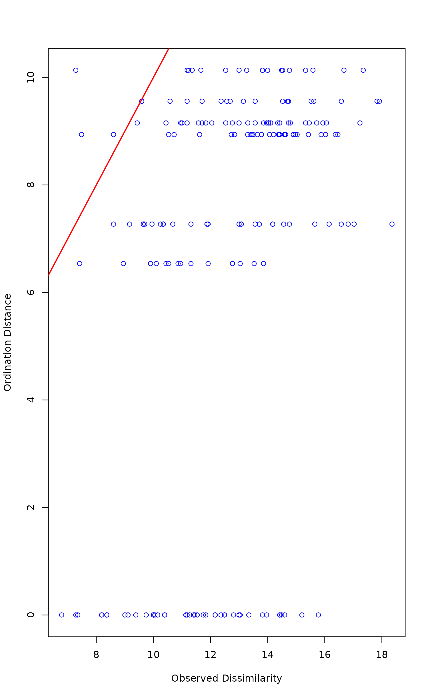

Display Ordination Distances Against Observed Distances in Eigenvector Ordinations
stressplot.wcmdscale.RdFunctions plot ordination distances in given number of dimensions
against observed distances or distances in full space in eigenvector
methods. The display is similar as the Shepard diagram
(stressplot for non-metric multidimensional scaling
with metaMDS or monoMDS), but shows the
linear relationship of the eigenvector ordinations. The
stressplot methods are available for wcmdscale,
rda, cca, capscale,
dbrda, prcomp and princomp.
Usage
# S3 method for wcmdscale
stressplot(object, k = 2, pch, p.col = "blue", l.col = "red",
lwd = 2, ...)Arguments
- object
Result object from eigenvector ordination (
wcmdscale,rda,cca,capscale)- k
Number of dimensions for which the ordination distances are displayed.
- pch, p.col, l.col, lwd
Plotting character, point colour and line colour like in default
stressplot- ...
Other parameters to functions, e.g. graphical parameters.
Details
The functions offer a similar display for eigenvector
ordinations as the standard Shepard diagram (stressplot)
in non-metric multidimensional scaling. The ordination distances in
given number of dimensions are plotted against observed
distances. With metric distances, the ordination distances in full
space (with all ordination axes) are equal to observed distances, and
the fit line shows this equality. In general, the fit line does not go
through the points, but the points for observed distances approach the
fit line from below. However, with non-Euclidean distances (in
wcmdscale or capscale) with negative
eigenvalues the ordination distances can exceed the observed distances
in real dimensions; the imaginary dimensions with negative eigenvalues
will correct these excess distances. If you have used
capscale or wcmdscale with argument
add to avoid negative eigenvalues, the ordination distances
will exceed the observed dissimilarities.
In partial ordination (cca, rda and
capscale with Condition in the formula), the
distances in the partial component are included both in the observed
distances and in ordination distances. With k=0, the
ordination distances refer to the partial ordination.
Value
Functions draw a graph and return invisibly the ordination distances or the ordination distances.
See also
stressplot and stressplot.monoMDS for
standard Shepard diagrams.
Examples
data(dune, dune.env)
mod <- rda(dune)
stressplot(mod)
mod <- rda(dune ~ Management, dune.env)
stressplot(mod, k=3)
